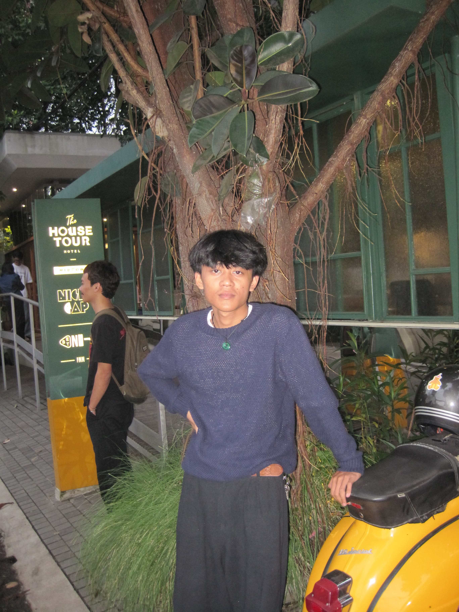
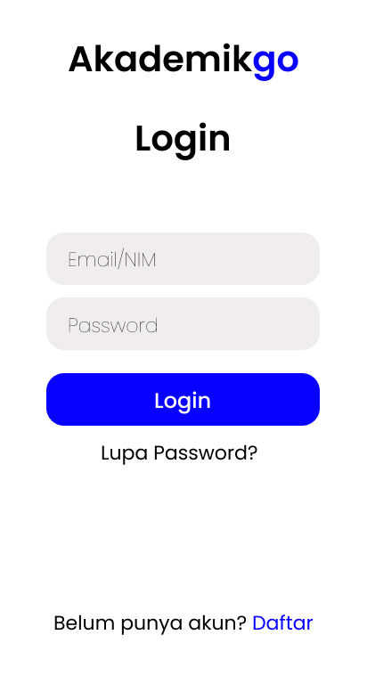
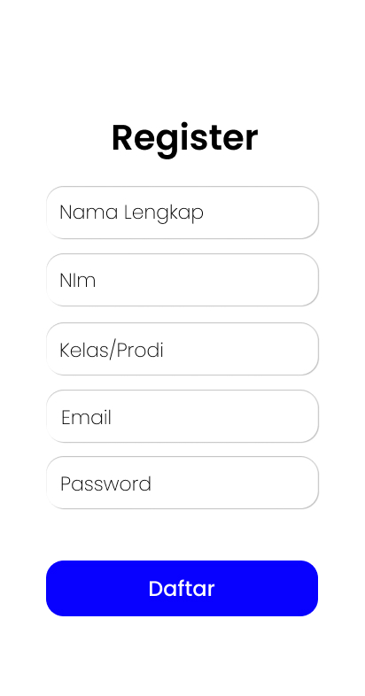
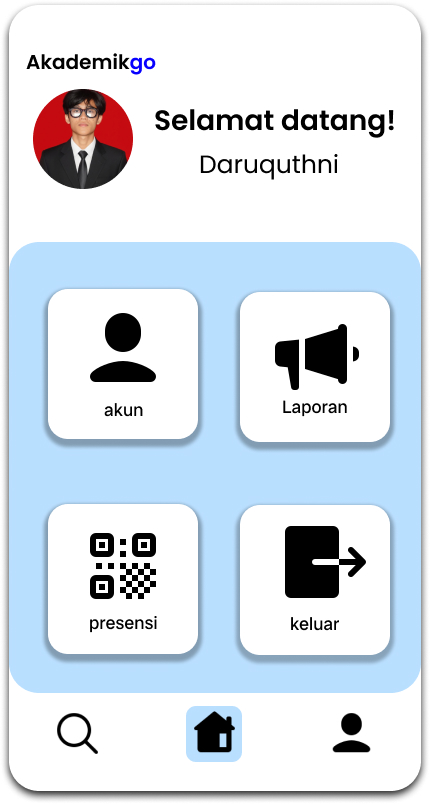
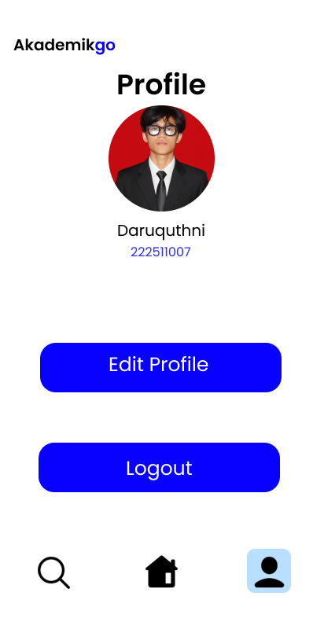
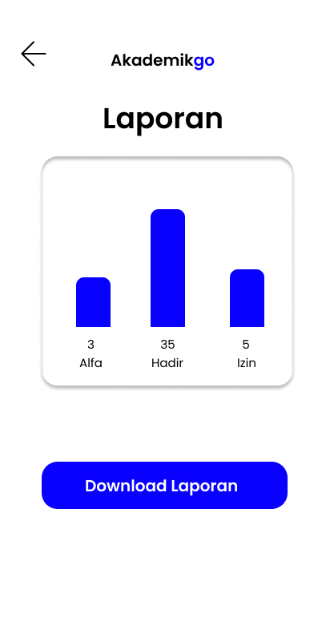
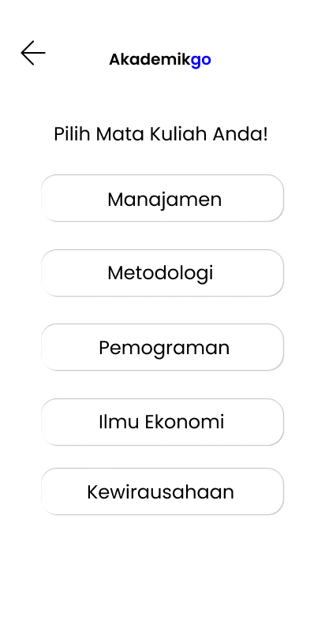
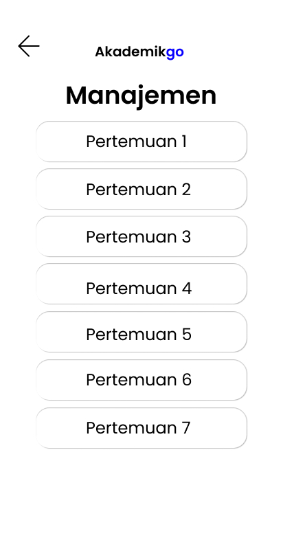

Mockup Sistem Presensi Akademik Terintegrasi
NIM: 222511007
Nama: Daruquthni

Ma'soem University
🧑🎓 Desain Sistem Presensi Akademik Mahasiswa
Didesain oleh: Daruquthni
- Landing Page Mahasiswa

- Login Mahasiswa

- Register Mahasiswa

- Dashboard Mahasiswa

- Profile

- Laporan

- Presensi

- Manajemen

- Pertemuan 1

- Presensi Berhasil

- Lupa Password

- Edit Profile